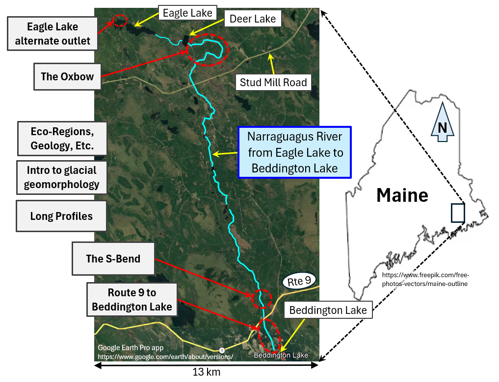

In the future, this web site will hopefully be used to introduce the reader to the upper portion of the Narraguagus River.
The Narraguagus river is one of Maine's coastal Atlantic salmon rivers and is actively being restored. For more information
related to these restoration efforts see the following:
Project SHARE
Downeast Salmon Federation
The current geomorphic state of the upper Narraguagus River was influenced by the Laurentide Ice Sheet (LIS)
and the log driving era. Much of the influence of the LIS becomes obvious when viewing digital elevation models of the
area and recognizing glacial-fluvial features such as eskers and esker-enlargements (both of which are plentyful within the
upper watershed). These glacial-fluvial features often influence the direction the river flows across the landscape and may
at times be a river confining feature. Eskers and esker-enlargements are a potential source of groundwater that could help
modulate river temperatures: cooling in the summer and reducing interstitial anchor ice in the winter.
The influence the log driving era (LDE) had on the currrent state of the river is not always clear or universally
agreed upon. The in-channel changes caused by the LDE likely varied along the river corridor, a non-comprehensive list of potential
impacts to the river, during or as a result of, the LDE is provided below:
Overwidened rivers spread out the flow, typically resulting in lower flow velocities. The combination of
increased bank erosion and reduced flow velocities can result in increased embeddedness.
The changes to the river described above, also would have changed the river's ice regime, likely resulting in
more ice runs, more frazil ice generation, and incresed anchor ice.
In the figure below, click on a bold text box for additional information on stated topic.
